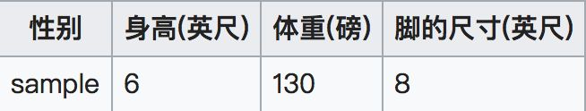

朴素贝叶斯法是基于贝叶斯定理与特征条件独立假设的分类方法。对于给定的训练数据集，首先基于特征条件独立假设学习输入/输出的联合概率分布；然后基于此模型，对给定的输入 x，利用贝叶斯定理求出后验概率最大的输出 y。朴素贝叶斯法实现简单，学习与预测的效率都很高，是一种常用的方法。
建议先看以下内容后，再看后面的内容。该部分内容相对更浅显易懂，后面部分内容来源于书籍，相对更“正式”；其中的两个例题也挺不错。
每次提到贝叶斯定理，我心中的崇敬之情都油然而生，倒不是因为这个定理多高深，而是因为它特别有用。这个定理解决了现实生活里经常遇到的问题：已知某条件概率，如何得到两个事件交换后的概率，也就是在已知P(A|B)的情况下如何求得P(B|A)。这里先解释什么是条件概率：
P ( A ∣ B ) P(A | B) P ( A ∣ B ) P ( A ∣ B ) = P ( A B ) P ( B ) P(A | B)=\frac{P(A B)}{P(B)} P ( A ∣ B ) = P ( B ) P ( A B )
贝叶斯定理之所以有用，是因为我们在生活中经常遇到这种情况：我们可以很容易直接得出P(A|B)，P(B|A)则很难直接得出，但我们更关心P(B|A)，贝叶斯定理就为我们打通从P(A|B)获得P(B|A)的道路。
下面不加证明地直接给出贝叶斯定理：
P ( B ∣ A ) = P ( A ∣ B ) P ( B ) P ( A ) P(B | A)=\frac{P(A | B) P(B)}{P(A)} P ( B ∣ A ) = P ( A ) P ( A ∣ B ) P ( B )
朴素贝叶斯分类是一种十分简单的分类算法，叫它朴素贝叶斯分类是因为这种方法的思想真的很朴素，朴素贝叶斯的思想基础是这样的：对于给出的待分类项，求解在此项出现的条件下各个类别出现的概率，哪个最大，就认为此待分类项属于哪个类别。通俗来说，就好比这么个道理，你在街上看到一个黑人，我问你你猜这哥们哪里来的，你十有八九猜非洲。为什么呢？因为黑人中非洲人的比率最高，当然人家也可能是美洲人或亚洲人，但在没有其它可用信息下，我们会选择条件概率最大的类别，这就是朴素贝叶斯的思想基础。
朴素贝叶斯分类的正式定义如下：
设 x = { a 1 , a 2 , … , a m } x=\left\{a_{1}, a_{2}, \ldots, a_{m}\right\} x = { a 1 , a 2 , … , a m }
有类别集合 C = { y 1 , y 2 , … , y n } C=\left\{y_{1}, y_{2}, \ldots, y_{n}\right\} C = { y 1 , y 2 , … , y n }
计算 P ( y 1 ∣ x ) , P ( y 2 ∣ x ) , … , P ( y n ∣ x ) P\left(y_{1} | x\right), P\left(y_{2} | x\right), \ldots, P\left(y_{n} | x\right) P ( y 1 ∣ x ) , P ( y 2 ∣ x ) , … , P ( y n ∣ x )
如果 P ( y k ∣ x ) = max { P ( y 1 ∣ x ) , P ( y 2 ∣ x ) , … , P ( y n ∣ x ) } P\left(y_{k} | x\right)=\max \left\{P\left(y_{1} | x\right), P\left(y_{2} | x\right), \ldots, P\left(y_{n} | x\right)\right\} P ( y k ∣ x ) = max { P ( y 1 ∣ x ) , P ( y 2 ∣ x ) , … , P ( y n ∣ x ) } x ∈ y k x \in y_{k} x ∈ y k
那么现在的关键就是如何计算第3步中的各个条件概率。我们可以这么做：
找到一个已知分类的待分类项集合，这个集合叫做训练样本集。
统计得到在各类别下各个特征属性的条件概率估计。即：
P ( a 1 ∣ y 1 ) , P ( a 2 ∣ y 1 ) , … , P ( a m ∣ y 1 ) ; P ( a 1 ∣ y 2 ) , P ( a 2 ∣ y 2 ) , … , P ( a m ∣ y 2 ) ; … ; P ( a 1 ∣ y n ) , P ( a 2 ∣ y n ) , … , P ( a m ∣ y n ) P\left(a_{1} | y_{1}\right), P\left(a_{2} | y_{1}\right), \ldots, P\left(a_{m} | y_{1}\right) ; P\left(a_{1} | y_{2}\right), P\left(a_{2} | y_{2}\right), \ldots, P\left(a_{m} | y_{2}\right) ; \ldots ; P\left(a_{1} | y_{n}\right), P\left(a_{2} | y_{n}\right), \ldots, P\left(a_{m} | y_{n}\right) P ( a 1 ∣ y 1 ) , P ( a 2 ∣ y 1 ) , … , P ( a m ∣ y 1 ) ; P ( a 1 ∣ y 2 ) , P ( a 2 ∣ y 2 ) , … , P ( a m ∣ y 2 ) ; … ; P ( a 1 ∣ y n ) , P ( a 2 ∣ y n ) , … , P ( a m ∣ y n )
如果各个特征属性是条件独立的，则根据贝叶斯定理有如下推导：
P ( y i ∣ x ) = P ( x ∣ y i ) P ( y i ) P ( x ) P\left(y_{i} | x\right)=\frac{P\left(x | y_{i}\right) P\left(y_{i}\right)}{P(x)} P ( y i ∣ x ) = P ( x ) P ( x ∣ y i ) P ( y i )
因为分母对于所有类别为常数，因为我们只要将分子最大化皆可。又因为各特征属性是条件独立的，所以有：
P ( x ∣ y i ) P ( y i ) = P ( a 1 ∣ y i ) P ( a 2 ∣ y i ) … P ( a m ∣ y i ) P ( y i ) = P ( y i ) ∏ j = 1 m P ( a j ∣ y i ) P\left(x | y_{i}\right) P\left(y_{i}\right)=P\left(a_{1} | y_{i}\right) P\left(a_{2} | y_{i}\right) \ldots P\left(a_{m} | y_{i}\right) P\left(y_{i}\right)=P\left(y_{i}\right) \prod_{j=1}^{m} P\left(a_{j} | y_{i}\right) P ( x ∣ y i ) P ( y i ) = P ( a 1 ∣ y i ) P ( a 2 ∣ y i ) … P ( a m ∣ y i ) P ( y i ) = P ( y i ) j = 1 ∏ m P ( a j ∣ y i )
根据上述分析，朴素贝叶斯分类的流程可以由下图表示（暂时不考虑验证）：
这一节讨论P(a|y)的估计。
由上文看出，计算各个划分的条件概率P(a|y)是朴素贝叶斯分类的关键性步骤，当特征属性为离散值时，只要很方便的统计训练样本中各个划分在每个类别中出现的频率即可用来估计P(a|y)，下面重点讨论特征属性是连续值的情况。
当特征属性为连续值时，通常假定其值服从高斯分布（也称正态分布）。即：
g ( x , η , σ ) = 1 2 π σ e − ( x − η ) 2 2 σ 2 g(x, \eta, \sigma)=\frac{1}{\sqrt{2 \pi} \sigma} e^{-} \frac{(x-\eta)^{2}}{2 \sigma^{2}} g ( x , η , σ ) = 2 π σ 1 e − 2 σ 2 ( x − η ) 2
而：
P ( a k ∣ y i ) = g ( a k , η y i , σ y i ) P\left(a_{k} | y_{i}\right)=g\left(a_{k}, \eta_{y_{i}}, \sigma_{y_{i}}\right) P ( a k ∣ y i ) = g ( a k , η y i , σ y i )
因此只要计算出训练样本中各个类别中此特征项划分的各均值和标准差，代入上述公式即可得到需要的估计值。均值与标准差的计算在此不再赘述。
另一个需要讨论的问题就是当P(a|y)=0怎么办，当某个类别下某个特征项划分没有出现时，就是产生这种现象，这会令分类器质量大大降低。为了解决这个问题，我们引入Laplace校准，它的思想非常简单，就是对没类别下所有划分的计数加1，这样如果训练样本集数量充分大时，并不会对结果产生影响，并且解决了上述频率为0的尴尬局面。（该部分更多内容可看后面相关内容。）
下面讨论一个使用朴素贝叶斯分类解决实际问题的例子，为了简单起见，对例子中的数据做了适当的简化。
这个问题是这样的，对于SNS社区来说，不真实账号（使用虚假身份或用户的小号）是一个普遍存在的问题，作为SNS社区的运营商，希望可以检测出这些不真实账号，从而在一些运营分析报告中避免这些账号的干扰，亦可以加强对SNS社区的了解与监管。
如果通过纯人工检测，需要耗费大量的人力，效率也十分低下，如能引入自动检测机制，必将大大提升工作效率。这个问题说白了，就是要将社区中所有账号在真实账号和不真实账号两个类别上进行分类，下面我们一步一步实现这个过程。
首先设C=0表示真实账号，C=1表示不真实账号。
1、确定特征属性及划分
这一步要找出可以帮助我们区分真实账号与不真实账号的特征属性，在实际应用中，特征属性的数量是很多的，划分也会比较细致，但这里为了简单起见，我们用少量的特征属性以及较粗的划分，并对数据做了修改。
我们选择三个特征属性：a1：日志数量/注册天数，a2：好友数量/注册天数，a3：是否使用真实头像。在SNS社区中这三项都是可以直接从数据库里得到或计算出来的。
下面给出划分：a1：{a<=0.05, 0.05<a<0.2, a>=0.2}，a1：{a<=0.1, 0.1<a<0.8, a>=0.8}，a3：{a=0（不是）,a=1（是）}。
2、获取训练样本
这里使用运维人员曾经人工检测过的1万个账号作为训练样本。
3、计算训练样本中每个类别的频率
用训练样本中真实账号和不真实账号数量分别除以一万，得到：
P ( C = 0 ) = 8900 / 100000 = 0.89 P ( C = 1 ) = 110 / 100000 = 0.11 \begin{array}{l}{P(C=0)=8900 / 100000=0.89} \\ {P(C=1)=110 / 100000=0.11}\end{array} P ( C = 0 ) = 8 9 0 0 / 1 0 0 0 0 0 = 0 . 8 9 P ( C = 1 ) = 1 1 0 / 1 0 0 0 0 0 = 0 . 1 1
4、计算每个类别条件下各个特征属性划分的频率
5、使用分类器进行鉴别
下面我们使用上面训练得到的分类器鉴别一个账号，这个账号使用非真实头像，日志数量与注册天数的比率为0.1，好友数与注册天数的比率为0.2。
P ( C = 0 ) P ( x ∣ C = 0 ) = P ( C = 0 ) P ( 0.05 < a 1 < 0.2 ∣ C = 0 ) P ( 0.1 < a 2 < 0.8 ∣ C = 0 ) P ( a 3 = 0 ∣ C = 0 ) = 0.89 ∗ 0.5 ∗ 0.7 ∗ 0.2 = 0.0623 P ( C = 1 ) P ( x ∣ C = 1 ) = P ( C = 1 ) P ( 0.05 < a 1 < 0.2 ∣ C = 1 ) P ( 0.1 < a 2 < 0.8 ∣ C = 1 ) P ( a 3 = 0 ∣ C = 1 ) = 0.11 ∗ 0.1 ∗ 0.2 ∗ 0.9 = 0.00198 \begin{aligned} P(C=0) P(x | C=0)=P(C=0) P\left(0.05<a_{1}<0.2 | C=0\right) P(0.1<\\\left.a_{2}<0.8 | C=0\right) P\left(a_{3}=0 | C=0\right)=0.89 * 0.5 * 0.7 * 0.2=0.0623 \\ P(C=1) P(x | C=1)=P(C=1) P\left(0.05<a_{1}<0.2 | C=1\right) P(0.1<\\\left.a_{2}<0.8 | C=1\right) P\left(a_{3}=0 | C=1\right)=0.11 * 0.1 * 0.2 * 0.9=0.00198 \end{aligned} P ( C = 0 ) P ( x ∣ C = 0 ) = P ( C = 0 ) P ( 0 . 0 5 < a 1 < 0 . 2 ∣ C = 0 ) P ( 0 . 1 < a 2 < 0 . 8 ∣ C = 0 ) P ( a 3 = 0 ∣ C = 0 ) = 0 . 8 9 ∗ 0 . 5 ∗ 0 . 7 ∗ 0 . 2 = 0 . 0 6 2 3 P ( C = 1 ) P ( x ∣ C = 1 ) = P ( C = 1 ) P ( 0 . 0 5 < a 1 < 0 . 2 ∣ C = 1 ) P ( 0 . 1 < a 2 < 0 . 8 ∣ C = 1 ) P ( a 3 = 0 ∣ C = 1 ) = 0 . 1 1 ∗ 0 . 1 ∗ 0 . 2 ∗ 0 . 9 = 0 . 0 0 1 9 8
可以看到，虽然这个用户没有使用真实头像，但是通过分类器的鉴别，更倾向于将此账号归入真实账号类别。这个例子也展示了当特征属性充分多时，朴素贝叶斯分类对个别属性的抗干扰性。
训练数据集：
T = { ( x 1 , y 1 ) , ( x 2 , y 2 ) , ⋯ , ( x N , y N ) } \begin{aligned} \\& T = \left\{ \left( x_{1}, y_{1} \right), \left( x_{2}, y_{2} \right), \cdots, \left( x_{N}, y_{N} \right) \right\} \end{aligned} T = { ( x 1 , y 1 ) , ( x 2 , y 2 ) , ⋯ , ( x N , y N ) }
由P ( X , Y ) P \left( X, Y \right) P ( X , Y ) x i ∈ X ⊆ R n , y i ∈ Y = { c 1 , c 2 , ⋯ , c K } , i = 1 , 2 , ⋯ , N x_{i} \in \mathcal{X} \subseteq R^{n}, y_{i} \in \mathcal{Y} = \left\{ c_{1}, c_{2}, \cdots, c_{K} \right\}, i = 1, 2, \cdots, N x i ∈ X ⊆ R n , y i ∈ Y = { c 1 , c 2 , ⋯ , c K } , i = 1 , 2 , ⋯ , N x i x_{i} x i i i i y i y_{i} y i x i x_{i} x i X X X X \mathcal{X} X Y Y Y Y \mathcal{Y} Y P ( X , Y ) P \left( X, Y \right) P ( X , Y ) X X X Y Y Y
朴素贝叶斯法通过训练数据集学习联合概率分布 P ( X , Y ) P(X, Y) P ( X , Y )
P ( Y = c k ) , k = 1 , 2 , ⋯ , K P\left(Y=c_{k}\right), \quad k=1,2, \cdots, K P ( Y = c k ) , k = 1 , 2 , ⋯ , K
条件概率分布：
P ( X = x ∣ Y = c k ) = P ( X ( 1 ) = x ( 1 ) , ⋯ , X ( n ) = x ( n ) ∣ Y = c k ) , k = 1 , 2 , ⋯ , K P\left(X=x | Y=c_{k}\right)=P\left(X^{(1)}=x^{(1)}, \cdots, X^{(n)}=x^{(n)} | Y=c_{k}\right), \quad k=1,2, \cdots, K P ( X = x ∣ Y = c k ) = P ( X ( 1 ) = x ( 1 ) , ⋯ , X ( n ) = x ( n ) ∣ Y = c k ) , k = 1 , 2 , ⋯ , K
于是学习到联合概率分布 P ( X , Y ) P(X, Y) P ( X , Y )
朴素贝叶斯法对条件概率分布作了条件独立的假设。由于这是一个较强的假设，朴素贝叶斯法也因此得名。具体地，条件独立假设是：
P ( X = x ∣ Y = c k ) = P ( X ( 1 ) = x ( 1 ) , ⋯ , X ( n ) = x ( n ) ∣ Y = c k ) = ∏ j = 1 n P ( X ( j ) = x ( j ) ∣ Y = c k ) ( 1 ) \begin{aligned} P\left(X=x | Y=c_{k}\right) &=P\left(X^{(1)}=x^{(1)}, \cdots, X^{(n)}=x^{(n)} | Y=c_{k}\right) \\ &=\prod_{j=1}^{n} P\left(X^{(j)}=x^{(j)} | Y=c_{k}\right) \tag{$1$} \end{aligned} P ( X = x ∣ Y = c k ) = P ( X ( 1 ) = x ( 1 ) , ⋯ , X ( n ) = x ( n ) ∣ Y = c k ) = j = 1 ∏ n P ( X ( j ) = x ( j ) ∣ Y = c k ) ( 1 )
朴素贝叶斯法实际上学习到生成数据的机制，所以属于生成模型。条件独立假设等于是说用于分类特征在类确定的条件下都是独立的。这一假设使朴素贝叶斯法变得简单，但有时会牺牲一定的分类准确率。
朴素贝叶斯法分类是时，对给定的输入 x x x P ( Y = c k ∣ X = x ) P\left(Y=c_{k} | X=x\right) P ( Y = c k ∣ X = x ) x x x
P ( Y = c k ∣ X = x ) = P ( X = x ∣ Y = c k ) P ( Y = c k ) ∑ k P ( X = x ∣ Y = c k ) P ( Y = c k ) ( 2 ) P\left(Y=c_{k} | X=x\right)=\frac{P\left(X=x | Y=c_{k}\right) P\left(Y=c_{k}\right)}{\sum_{k} P\left(X=x | Y=c_{k}\right) P\left(Y=c_{k}\right)} \tag{$2$} P ( Y = c k ∣ X = x ) = ∑ k P ( X = x ∣ Y = c k ) P ( Y = c k ) P ( X = x ∣ Y = c k ) P ( Y = c k ) ( 2 )
将式(1)代入式(2)有：
P ( Y = c k ∣ X = x ) = P ( Y = c k ) ∏ j P ( X ( j ) = x ( j ) ∣ Y = c k ) ∑ k P ( Y = c k ) ∏ j P ( X ( j ) = x ( j ) ∣ Y = c k ) , k = 1 , 2 , ⋯ , K P\left(Y=c_{k} | X=x\right)=\frac{P\left(Y=c_{k}\right) \prod_{j} P\left(X^{(j)}=x^{(j)} | Y=c_{k}\right)}{\sum_{k} P\left(Y=c_{k}\right) \prod_{j} P\left(X^{(j)}=x^{(j)} | Y=c_{k}\right)}, \quad k=1,2, \cdots, K P ( Y = c k ∣ X = x ) = ∑ k P ( Y = c k ) ∏ j P ( X ( j ) = x ( j ) ∣ Y = c k ) P ( Y = c k ) ∏ j P ( X ( j ) = x ( j ) ∣ Y = c k ) , k = 1 , 2 , ⋯ , K
这是朴素贝叶斯法分类的基本公式。于是，朴素贝叶斯分类器可表示为：
y = f ( x ) = arg max c k P ( Y = c k ) ∏ j P ( X ( j ) = x ( j ) ∣ Y = c k ) ∑ k P ( Y = c k ) ∏ j P ( X ( j ) = x ( j ) ∣ Y = c k ) ( 3 ) y=f(x)=\arg \max _{c_{k}} \frac{P\left(Y=c_{k}\right) \prod_{j} P\left(X^{(j)}=x^{(j)} | Y=c_{k}\right)}{\sum_{k} P\left(Y=c_{k}\right) \prod_{j} P\left(X^{(j)}=x^{(j)} | Y=c_{k}\right)} \tag{$3$} y = f ( x ) = arg c k max ∑ k P ( Y = c k ) ∏ j P ( X ( j ) = x ( j ) ∣ Y = c k ) P ( Y = c k ) ∏ j P ( X ( j ) = x ( j ) ∣ Y = c k ) ( 3 )
注意到，在式(3)中分母对所有 ck 都是相同的，所以：
y = arg max c k P ( Y = c k ) ∏ j P ( X ( j ) = x ( j ) ∣ Y = c k ) y=\arg \max _{c_{k}} P\left(Y=c_{k}\right) \prod_{j} P\left(X^{(j)}=x^{(j)} | Y=c_{k}\right) y = arg c k max P ( Y = c k ) j ∏ P ( X ( j ) = x ( j ) ∣ Y = c k )
详见书籍。
在朴素贝叶斯法中，学习意味着估计 P ( Y = c k ) P \left( Y = c_{k} \right) P ( Y = c k ) P ( X ( j ) = x ( j ) ∣ Y = c k ) P\left(X^{(j)}=x^{(j)} | Y=c_{k}\right) P ( X ( j ) = x ( j ) ∣ Y = c k )
先验概率 P ( Y = c k ) P \left( Y = c_{k} \right) P ( Y = c k )
P ( Y = c k ) = ∑ i = 1 N I ( y i = c k ) N k = 1 , 2 , ⋯ , K \begin{aligned} P \left( Y = c_{k} \right) = \dfrac{\sum_{i=1}^{N} I \left( y_{i} = c_{k} \right)}{N} \quad k = 1, 2, \cdots, K\end{aligned} P ( Y = c k ) = N ∑ i = 1 N I ( y i = c k ) k = 1 , 2 , ⋯ , K
设第j j j x ( j ) x^{\left( j \right)} x ( j ) { a j 1 , a j 2 , ⋯ , a j S j } \left\{ a_{j1}, a_{j2}, \cdots, a_{j S_{j}} \right\} { a j 1 , a j 2 , ⋯ , a j S j } P ( X ( j ) = a j l ∣ Y = c k ) P \left( X^{\left( j \right)} = a_{jl} | Y = c_{k} \right) P ( X ( j ) = a j l ∣ Y = c k )
P ( X ( j ) = a j l ∣ Y = c k ) ＝ ∑ i = 1 N I ( x i ( j ) = a j l , y i = c k ) ∑ i = 1 N I ( y i = c k ) j = 1 , 2 , ⋯ , n ; l = 1 , 2 , ⋯ , S j ; k = 1 , 2 , ⋯ , K \begin{aligned} P \left( X^{\left( j \right)} = a_{jl} | Y = c_{k} \right) ＝ \dfrac{\sum_{i=1}^{N} I \left(x_{i}^{\left( j \right)}=a_{jl}, y_{i} = c_{k} \right)}{\sum_{i=1}^{N} I \left( y_{i} = c_{k} \right)}
\\ j = 1, 2, \cdots, n;\quad l = 1, 2, \cdots, S_{j};\quad k = 1, 2, \cdots, K\end{aligned} P ( X ( j ) = a j l ∣ Y = c k ) ＝ ∑ i = 1 N I ( y i = c k ) ∑ i = 1 N I ( x i ( j ) = a j l , y i = c k ) j = 1 , 2 , ⋯ , n ; l = 1 , 2 , ⋯ , S j ; k = 1 , 2 , ⋯ , K
其中，x i ( j ) x_{i}^{\left( j \right)} x i ( j ) i i i j j j a j l a_{jl} a j l j j j l l l I I I
下面给出朴素贝叶斯法的学习与分类算法。
朴素贝叶斯算法：
输入：线性可分训练数据集T = { ( x 1 , y 1 ) , ( x 2 , y 2 ) , ⋯ , ( x N , y N ) } T = \left\{ \left( x_{1}, y_{1} \right), \left( x_{2}, y_{2} \right), \cdots, \left( x_{N}, y_{N} \right) \right\} T = { ( x 1 , y 1 ) , ( x 2 , y 2 ) , ⋯ , ( x N , y N ) } x i ＝ ( x i ( 1 ) , x i ( 2 ) , ⋯ , x i ( n ) ) T x_{i}＝ \left( x_{i}^{\left(1\right)},x_{i}^{\left(2\right)},\cdots, x_{i}^{\left(n\right)} \right)^{T} x i ＝ ( x i ( 1 ) , x i ( 2 ) , ⋯ , x i ( n ) ) T x i ( j ) x_{i}^{\left( j \right)} x i ( j ) i i i j j j x i ( j ) ∈ { a j 1 , a j 2 , ⋯ , a j S j } x_{i}^{\left( j \right)} \in \left\{ a_{j1}, a_{j2}, \cdots, a_{j S_{j}} \right\} x i ( j ) ∈ { a j 1 , a j 2 , ⋯ , a j S j } a j l a_{jl} a j l j j j l l l j = 1 , 2 , ⋯ , n ; l = 1 , 2 , ⋯ , S j , y i ∈ { c 1 , c 2 , ⋯ , c K } j = 1, 2, \cdots, n; l = 1, 2, \cdots, S_{j},y_{i} \in \left\{ c_{1}, c_{2}, \cdots, c_{K} \right\} j = 1 , 2 , ⋯ , n ; l = 1 , 2 , ⋯ , S j , y i ∈ { c 1 , c 2 , ⋯ , c K } x x x
输出：实例x x x
计算先验概率及条件概率
P ( Y = c k ) = ∑ i = 1 N I ( y i = c k ) N k = 1 , 2 , ⋯ , K P ( X ( j ) = a j l ∣ Y = c k ) ＝ ∑ i = 1 N I ( x i ( j ) = a j l , y i = c k ) ∑ i = 1 N I ( y i = c k ) j = 1 , 2 , ⋯ , n ; l = 1 , 2 , ⋯ , S j ; k = 1 , 2 , ⋯ , K \begin{aligned} P \left( Y = c_{k} \right) = \dfrac{\sum_{i=1}^{N} I \left( y_{i} = c_{k} \right)}{N} \quad k = 1, 2, \cdots, K
\\ P \left( X^{\left( j \right)} = a_{jl} | Y = c_{k} \right) ＝ \dfrac{\sum_{i=1}^{N} I \left(x_{i}^{\left( j \right)}=a_{jl}, y_{i} = c_{k} \right)}{\sum_{i=1}^{N} I \left( y_{i} = c_{k} \right)}
\\ j = 1, 2, \cdots, n;\quad l = 1, 2, \cdots, S_{j};\quad k = 1, 2, \cdots, K\end{aligned} P ( Y = c k ) = N ∑ i = 1 N I ( y i = c k ) k = 1 , 2 , ⋯ , K P ( X ( j ) = a j l ∣ Y = c k ) ＝ ∑ i = 1 N I ( y i = c k ) ∑ i = 1 N I ( x i ( j ) = a j l , y i = c k ) j = 1 , 2 , ⋯ , n ; l = 1 , 2 , ⋯ , S j ; k = 1 , 2 , ⋯ , K
对于给定的实例x = ( x ( 1 ) , x ( 2 ) , ⋯ , x ( n ) ) T x=\left( x^{\left( 1 \right)}, x^{\left( 2 \right)}, \cdots, x^{\left( n \right)}\right)^{T} x = ( x ( 1 ) , x ( 2 ) , ⋯ , x ( n ) ) T
P ( Y = c k ) ∏ j = 1 n P ( X ( j ) = x ( j ) ∣ Y = c k ) k = 1 , 2 , ⋯ , K \begin{aligned} P \left( Y = c_{k} \right)\prod_{j=1}^{n} P \left( X^{\left( j \right)} = x^{\left( j \right)} | Y = c_{k} \right) \quad k=1,2,\cdots,K\end{aligned} P ( Y = c k ) j = 1 ∏ n P ( X ( j ) = x ( j ) ∣ Y = c k ) k = 1 , 2 , ⋯ , K
确定实例x x x
y = f ( x ) = arg max c k P ( Y = c k ) ∏ j = 1 n P ( X ( j ) = x ( j ) ∣ Y = c k ) \begin{aligned} y = f \left( x \right) = \arg \max_{c_{k}} P \left( Y = c_{k} \right)\prod_{j=1}^{n} P \left( X^{\left( j \right)} = x^{\left( j \right)} | Y = c_{k} \right) \end{aligned} y = f ( x ) = arg c k max P ( Y = c k ) j = 1 ∏ n P ( X ( j ) = x ( j ) ∣ Y = c k )
用极大似然估计可能会出现所要估计的概率值为 0 的情况。这时会影响到后验概率的计算结果，使分类产生偏差。解决这一问题的方法是采用贝叶斯估计。
条件概率的贝叶斯估计
P λ ( X ( j ) = a j l ∣ Y = c k ) ＝ ∑ i = 1 N I ( x i ( j ) = a j l , y i = c k ) + λ ∑ i = 1 N I ( y i = c k ) + S j λ \begin{aligned} P_{\lambda} \left( X^{\left( j \right)} = a_{jl} | Y = c_{k} \right) ＝ \dfrac{\sum_{i=1}^{N} I \left(x_{i}^{\left( j \right)}=a_{jl}, y_{i} = c_{k} \right) + \lambda}{\sum_{i=1}^{N} I \left( y_{i} = c_{k} \right) + S_{j} \lambda} \end{aligned} P λ ( X ( j ) = a j l ∣ Y = c k ) ＝ ∑ i = 1 N I ( y i = c k ) + S j λ ∑ i = 1 N I ( x i ( j ) = a j l , y i = c k ) + λ
上式需要注意的是：上式中的 S j S_{j} S j j j j S j S_{j} S j
式中λ ≥ 0 \lambda \geq 0 λ ≥ 0 λ ＝ 0 \lambda ＝ 0 λ ＝ 0 λ ＝ 1 \lambda ＝ 1 λ ＝ 1
先验概率的贝叶斯估计
P ( Y = c k ) = ∑ i = 1 N I ( y i = c k ) + λ N + K λ \begin{aligned} P \left( Y = c_{k} \right) = \dfrac{\sum_{i=1}^{N} I \left( y_{i} = c_{k} \right) + \lambda}{N + K \lambda}\end{aligned} P ( Y = c k ) = N + K λ ∑ i = 1 N I ( y i = c k ) + λ
对于属性分别是离散型和连续型的情况：
上面所述的例子为属性为离散型的情况，下面叙述一个属性是连续型的情况的例子：
给定训练数据如下：
通过以上人体测量特征，包括身高、体重、脚的尺寸，判断一个人是男性还是女性。
测试样本：

首先，假设人的身高，体重，脚的尺寸都满足高斯分布，分别计算各个特征的均值和方差，得到下表：
其次，我们认为先验概率是男性或者是女性是等概率的，即 p ( male ) = p ( female ) = 0.5 p(\text {male})=p(\text {female})=0.5 p ( male ) = p ( female ) = 0 . 5
判断该条测试样本属于男性还是女性，就等价于比较是男性的后验概率和女性的后验概率哪个大。
分母是个常数，只需要比较分子就行，这里给出分母的值：
计算男性的后验概率：p ( male ) = 0.5 p(\text {male})=0.5 p ( male ) = 0 . 5
这里大于1是因为是概率密度函数，而不是概率分布函数，所以大于1也是合理的。
上式中：6.1984 = 0.5 * 1.5789 * 5.9881 * 1.3112 .
上式中：5.3778 = 0.5 * 2.2346 * 1.6789 * 2.8669。
由于女性的后验概率分子较大，所以我们预测这个样本的为女性。
朴素贝叶斯算法（基于高斯分布）的求解方法总结：
y = arg max c k P ( Y = c k ) ∏ j P ( X ( j ) = x ( j ) ∣ Y = c k ) y=\arg \max _{c_{k}} P\left(Y=c_{k}\right) \prod_{j} P\left(X^{(j)}=x^{(j)} | Y=c_{k}\right) y = arg c k max P ( Y = c k ) j ∏ P ( X ( j ) = x ( j ) ∣ Y = c k )
由上式可知，求解某个类别下对应的概率值就只需要求解：该类别出现的概率 Y = c k Y=c_{k} Y = c k
求得一个类别的概率后，再依次求解其它类别的概率，最后选取概率最大的那个类别就是最终预测的类别。
关于朴素贝叶斯的假设： This is a very strong assumption that is most unlikely in real data, i.e. that the attributes do not interact. Nevertheless, the approach performs surprisingly well on data where this assumption does not hold.（这是一个非常强的假设，在真实数据中极不可能发生，即属性不相互作用。然而，该方法在不满足该假设的数据上表现出奇的好。）